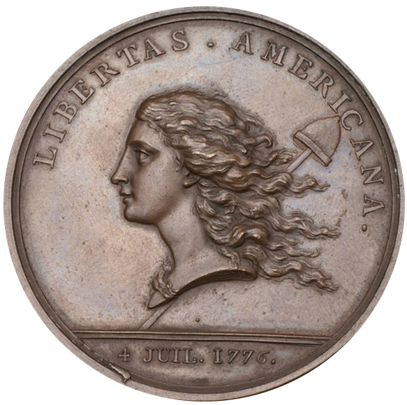

FUNGI in the NEWS
A collection of miscellaneous stories about fungi and slime molds that I like with some short comments. The stories are not always ordered by date, but newer stories are generally listed before older ones.
The background picture is a photo I took of Clavulinopsis in Garrett county, Maryland. Clavulinopsis is a beautiful coral-like mushroom that appeared in great abundance in the summer of 2019. Here are some more fungi photos:
Early July Garrett County Mushrooms
- Appalachian Mushrooms: A Field Guide by Walter Sturgeon Walt's latest book is fantastic. It is my go-to guide, succeeding Roody's Mushrooms of West Virginia and Central Appalachians.
- Fungi have been turning ants into zombies for a long time Oregon State researchers discovered a 50 million year old fossil example.
- A nice story on NPR about Taylor Lockwood and how amateur mycologists help advance the science.
- John Cage: A Mycological Foray by Ananda Pellerin, Kingston Trinder and Isabelle Bucklow (a review by Lydia Pyne).
- Slime molds are remarkable (you knew that already!). Lacking brains and even nervous systems, slime molds somehow exhibit memory. This Scientific American article reviews some recent research that hypothesizes a model for slime mold's remarkable ability to remember things. https://www.scientificamerican.com/article/how-slime-molds-remember-where-they-ate/
- High-fashion fungus: Now you can spend a fortune on a mycelial Hermès bag: https://www.theguardian.com/fashion/2021/jun/12/its-this-seasons-must-have-hermes-bag-and-its-made-from-fungus
- Fungi-like organisms have been around a long time
- Fungi on Mars? OK, this one is just way out there.
- Buildings made from fungi Some of this makes sense. Replacing foamed plastic insulation for instance?
- Mogu makes soundproofing materials from mycelia Although the competition here includes cork, which is perhaps the greenest of green materials.
- Insect mind control by fungi Psychedelics may be all fun and mystical to us humans but those clever fungi sometimes use their chemical powers to enslave insects.
- Even more fungal mind control: You know those cicadas everyone is writing about? Well, some of them are zombies controlled by fungi. https://www.cbsnews.com/news/zombie-cicadas-infected-mind-controlling-fungus-west-virginia/.
- Speaking of psychedelics, here's a fun essay by Mike Jay: Fungi, folklore, and fairyland. Did you know that Benjamin Franklin designed a coin to commemorate 1776 that included a psilocybe mushroom (liberty cap)? Here you go:

(Source: Metropolitan Museum of Art,
https://www.metmuseum.org/art/collection/search/197794.)
- Another article on myco-capitalism: https://www.newscientist.com/article/2205604-brainless-fungi-trade-resources-with-plants-like-a-stock-market/.
- Prof. Maria Harrison at Cornell and her team have discovered that fungi, like us, have their own microbiomes kind of like our gut bacteria. As you may know, fungi and plants often live in a kind of symbiotic relationship--the fungi collect water and nutrients for the plants and plants provide sugars to the fungi. The Cornell researchers are working out ways to regulate the fungal microbiome to increase nutrient transfer to plants, which reduces the need for fertilizer.
- Not fungi but a great article about Physarum in the Atlantic: A Brainless Slime That Shares Memories by Fusing -- The oozing yellow organism has no neurons, but it can solve mazes, make decisions, and learn by merging together.
- Beware the global catastrophic fungal risk!
https://link.springer.com/chapter/10.1007%2F82_2019_161
Fungi aren't always soft, cuddly and delicious, sometimes they are predators too!
Here is a related news story about the very scary Candida auris fungus:
A Mysterious Infection, Spanning the Globe in a Climate of Secrecy
- "Never underestimate the intelligence of trees" (an interview with Suzanne Simard) A discussion about the wood wide web.
- Speaking of the wood wide web, here is a nice New Yorker story from 2016,
The Secrets of the Wood Wide Web about London's Epping forest and Merlin Sheldrake, whos dad is a bit out there.
-
- Speaking of stories about Merlin Sheldrake,
Robert Macfarlane, the author of that New Yorker piece
about Epping forest also writes deeply about mycology and has a wonderful book called Underland.
(Macfarlane is not to be confused with the similarly-named 'Star wars' guy, Robert McFarlane.)
- A fun article on mushroom foraging, hipsters and haute cuisine:
https://www.theguardian.com/food/2019/oct/10/the-gospel-of-mushrooms-how-foraging-became-hip
- Think fungi are new age hippie types? Think again! They might just be hard-core capitalists
(according to this paper in the journal Cell): Mycorrhizal Fungi Respond to Resource Inequality by Moving Phosphorus from Rich to Poor Patches across Networks.
Fungi can get a higher price (in sugar) for their ability to supply water and nutrients (phosphorus, etc.) when the demand is higher.
- Ur-fungi. The kingdom of fungi is older than we thought:
Billion-year-old fossils set back evolution of earliest fungi
- Morels. You love to eat them, but did you realize that they practice agriculture? Yes, that's right not only
do we homo sapiens farm—well OK us and the ants and the termites too—but so do some fungi!
In fact, morels are apparently bacteria farmers
complete with cultivation, harvesting, storage, and division of labor,
according to this story in Forbes (of all places)
Morchella crassipes farms Pseudomonas putida.
- The death cap mushroom is expanding its range across north America Good thing Amanitas are pretty easy to identify! Be careful out there foraging...
- Magic mushrooms might have evolved to mess with insect brains ultimately, apparently, for our benefit! Those poor insects.
- Ohio's own incomparable Nik Money warns Against the naming of fungi (full PDF of article here:
PDF)
- I don't need to add any comment to the title of this really interesting article:
With Fungi in the Mix, Concrete Can Fill Its Own Cracks: Adding fungus might be one way to endow concrete with the ability to repair any damage, without the need for human intervention
- These cool mad scientists are making ecologically-friendly polymer and leather-like fabrics from mycelia:
Bolt Threads
- Enough about fungi, artist Heather Barnett talks about slime molds: Heather Barnett
- Fungi can learn to eat almost anything, even radiation